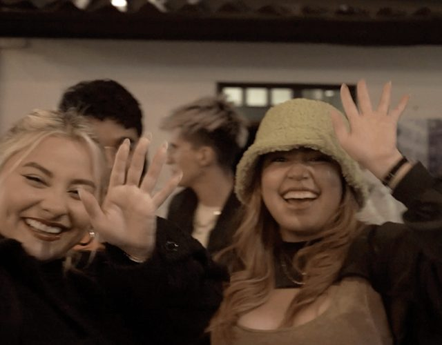
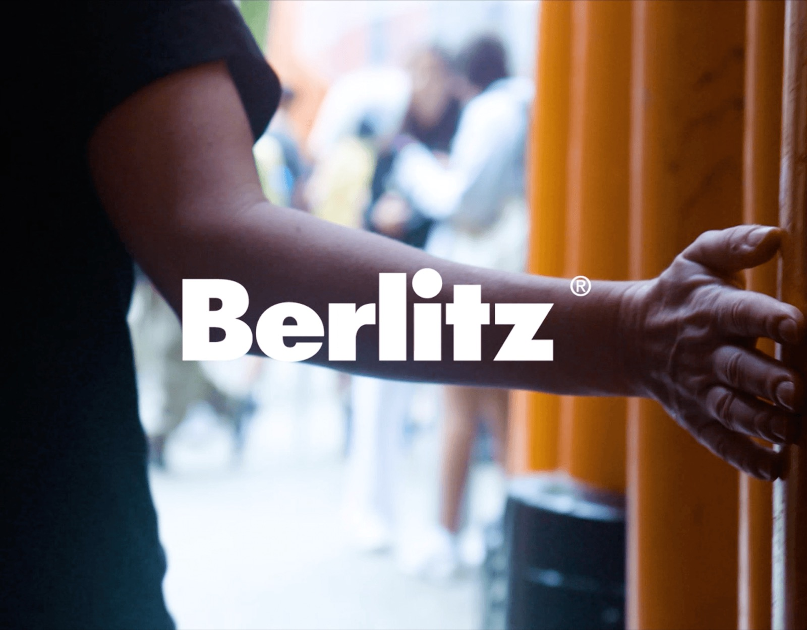

Audiovisual production & post-production specialist
I make things move —
from the first weird idea
to the final “YES!”
Open to new work, creative ideas & meaningful collaborations.
Let’s make something →Every idea deserves to move.
Ideas
Frames
People
Places
Stories


to tell stories.
Selected
projects→
projects→
Brands
Music
Social impact
Tech
and more...
Some ideas
stay in your head.
Others move the world.